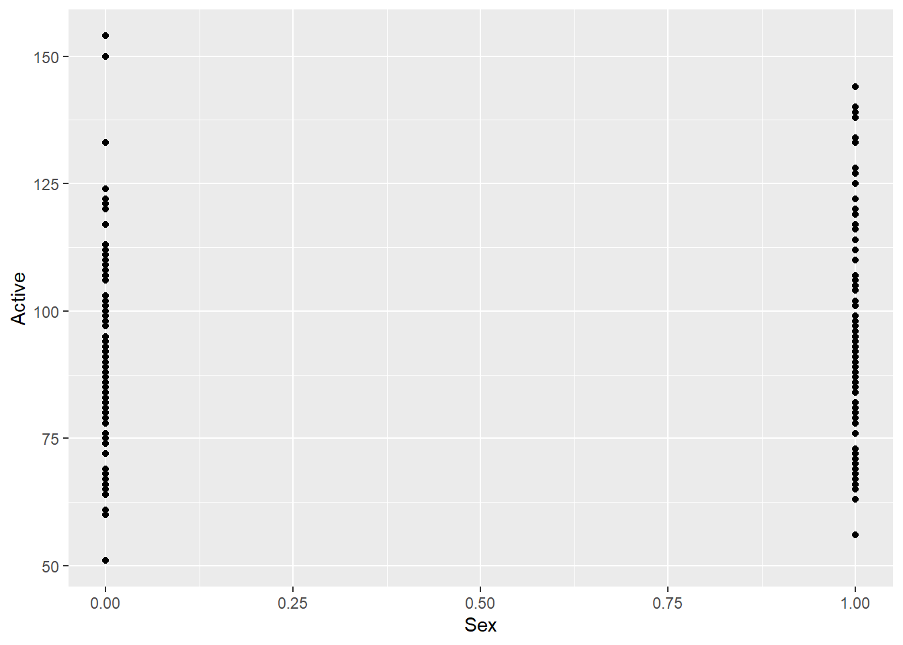
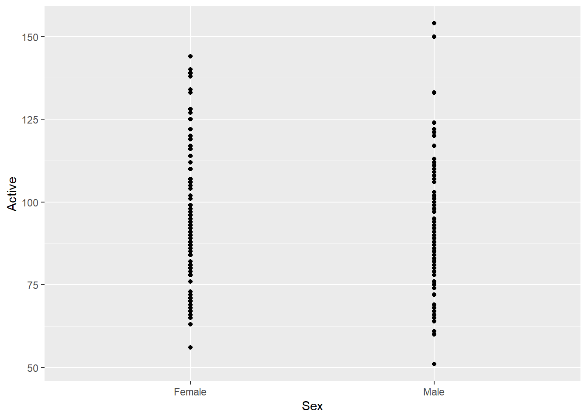
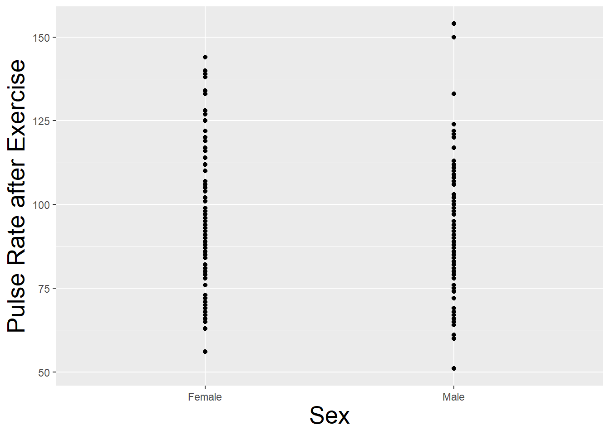
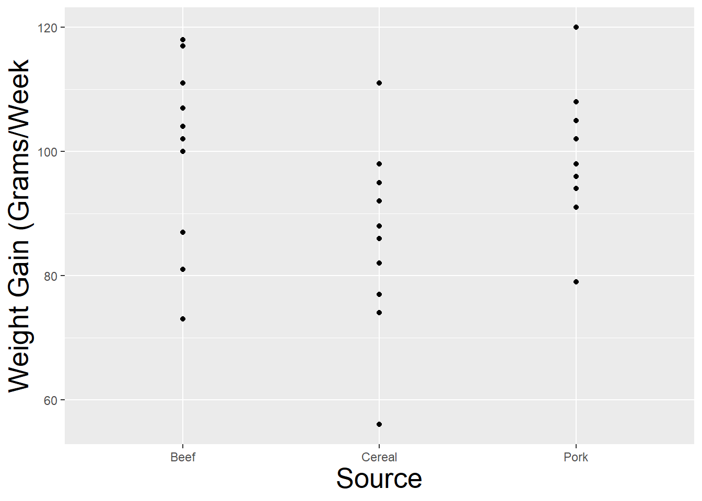
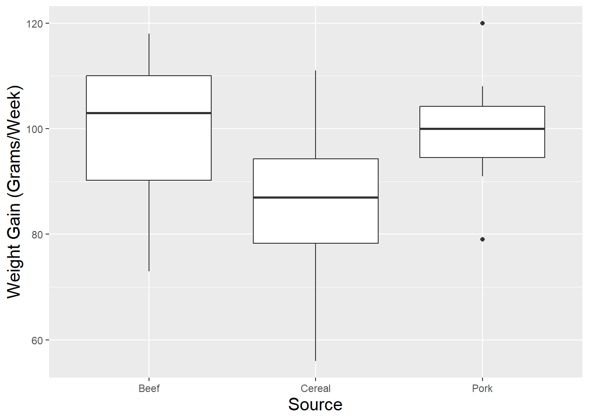

library(Stat2Data)
library(tidyverse)
data(Pulse)Anova Code
Setting Up
We first want to load the required packages and data. We will be using sample datasets from the textbook.
Difference of Means
First, we want to plot the data to see if it is appropriate for our type of analysis, an look for any outlier.
qplot(x=Sex, y=Active, data=Pulse)Warning: `qplot()` was deprecated in ggplot2 3.4.0.
The plot is ok, but we aren’t really sure what the values mean on the X axis and it isn’t a continous measure. We can check out the codebook by typing ?Pulse in the console and see that Female=1 an Male=0. We can use the factor command to tell R to treat this as a categorical measure and label the values to make sure we know which is which, and make the plot again.
Pulse$Sex <- factor(Pulse$Sex, levels = c(1,0),
labels = c("Female", "Male"))
### The plot is much clearer
qplot(x=Sex, y=Active, data=Pulse)
We are almost there, but we can make the plot look a bit nicer by increasing the font size on the axes labels and making sure the axes have labels that make sense.
qplot(x=Sex, y=Active, data=Pulse, ylab="Pulse Rate after Exercise") +
theme(axis.title = element_text(size = 20))
Now that the visualization is good, we can test if the means are significantly different.
t.test(Active~Sex, data=Pulse)
Welch Two Sample t-test
data: Active by Sex
t = 2.7323, df = 222.51, p-value = 0.006795
alternative hypothesis: true difference in means between group Female and group Male is not equal to 0
95 percent confidence interval:
1.866188 11.524274
sample estimates:
mean in group Female mean in group Male
94.81818 88.12295 Given that the p-value is way below .05, we reject the null hypotheses and conclude the difference in means is significant between Men and Women.
Anova
Next, we load the FatRats data frame to see how to test hypotheses with more than 2 groups. Since we only are interested in 1 independent variable for now, we are going to only keep observations where the protein level is high.
data(FatRats)
FatRats <- FatRats |>
filter(Protein=="Hi")Let’s plot the data again.
qplot(x=Source, y=Gain, data=FatRats, ylab="Weight Gain (Grams/Week") +
theme(axis.title = element_text(size = 20))
Sometimes a box an whisker plot can give us a better idea of the distribution.
qplot(x=Source, y=Gain, data=FatRats, ylab="Weight Gain (Grams/Week)", geom="boxplot") +
theme(axis.title = element_text(size = 15))
### If we want to see overall distribution need to trick R into thinking source is continuous
### This gives us and idea of the overall distribution of the Gain variable
#FatRats$con_source <- as.numeric(FatRats$Source)
#qplot(x=con_source, y=Gain, data=FatRats, ylab="Weight Gain (Grams/Week)", xlab="Source", geom="boxplot") +
# theme(axis.title = element_text(size = 15))We can manually calculate the total mean for weight gained.
FatRats <- FatRats |>
mutate(global_mean=mean(Gain))We can also calculate average per group, and a variable that calculates the difference between the group and global mean for each group. We can also calculate the difference between individual observations and their group means. We can use that information to calculate all necessary parts of our ANOVA calculation.
FatRats <- FatRats |>
group_by(Source) |>
mutate(group_mean=mean(Gain),
mean_dif_between=group_mean-global_mean,
mean_dif_within=Gain-group_mean)
### We want to square the variables measuring the error
FatRats <- FatRats |>
mutate(between_SE=mean_dif_between^2, within_SE=mean_dif_within^2)
### Next, we can add togehter these values to get the Sum of Squared Error for between and within group
between_SSE <- sum(FatRats$between_SE)
within_SSE <- sum(FatRats$within_SE)
### We can't forget to divide them by our DF
mean_btwn_sse <- between_SSE/2
mean_within_sse <- within_SSE/27
### f-statistic
f_stat <- mean_btwn_sse/mean_within_sse
### We could calculate p-value from that
pf(f_stat, 2, 27, lower.tail = FALSE)[1] 0.05034652Luckily for us, R makes it very easy to calculate this automatically rather than manually generating the values.
anovamodel=aov(Gain~Source,data=FatRats)
summary(anovamodel) Df Sum Sq Mean Sq F value Pr(>F)
Source 2 1280 640.0 3.346 0.0503 .
Residuals 27 5165 191.3
---
Signif. codes: 0 '***' 0.001 '**' 0.01 '*' 0.05 '.' 0.1 ' ' 1